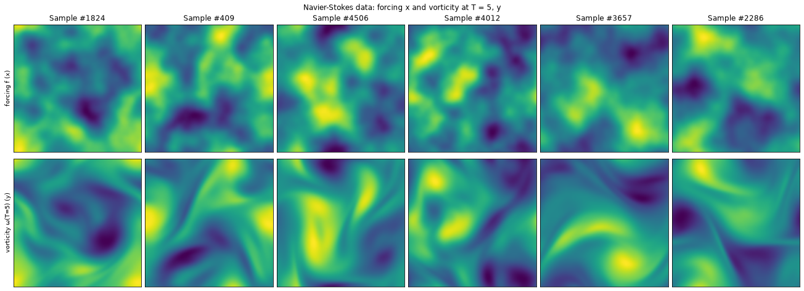
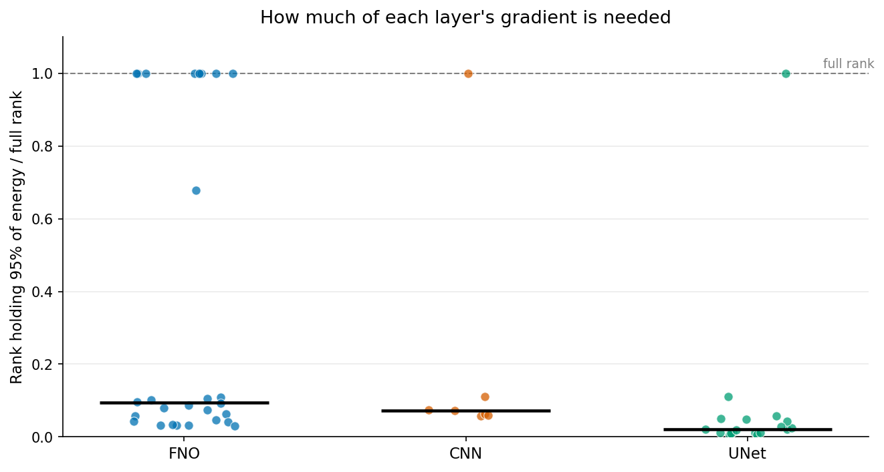
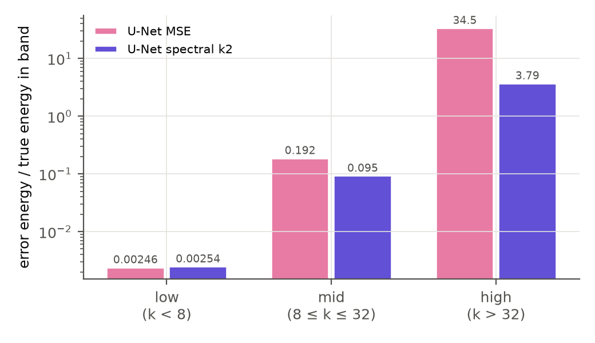
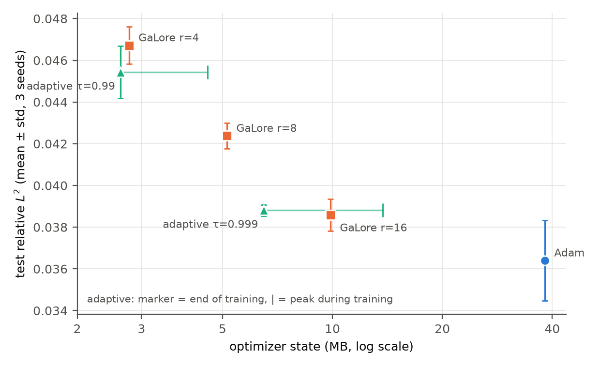
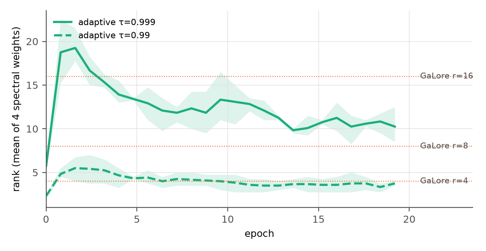
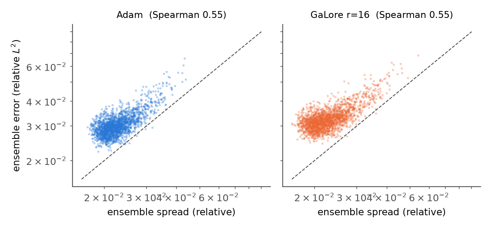
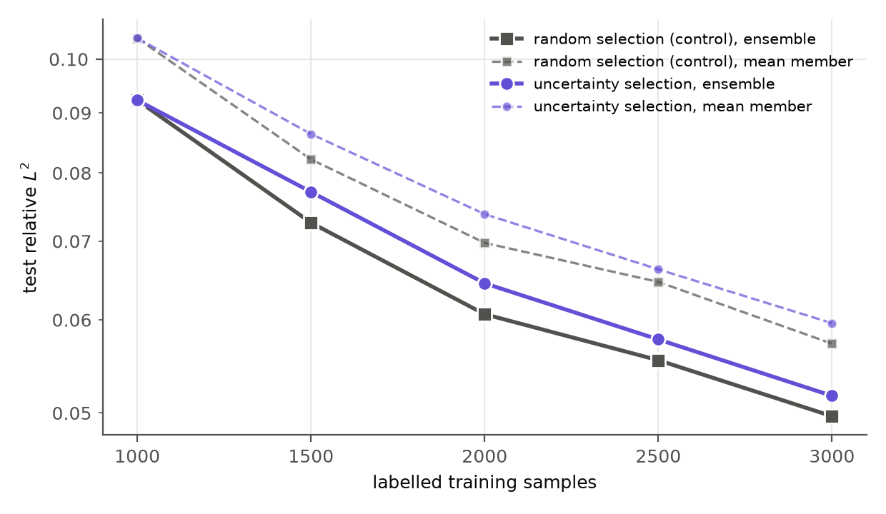
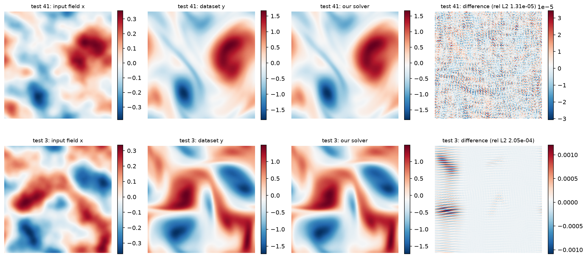
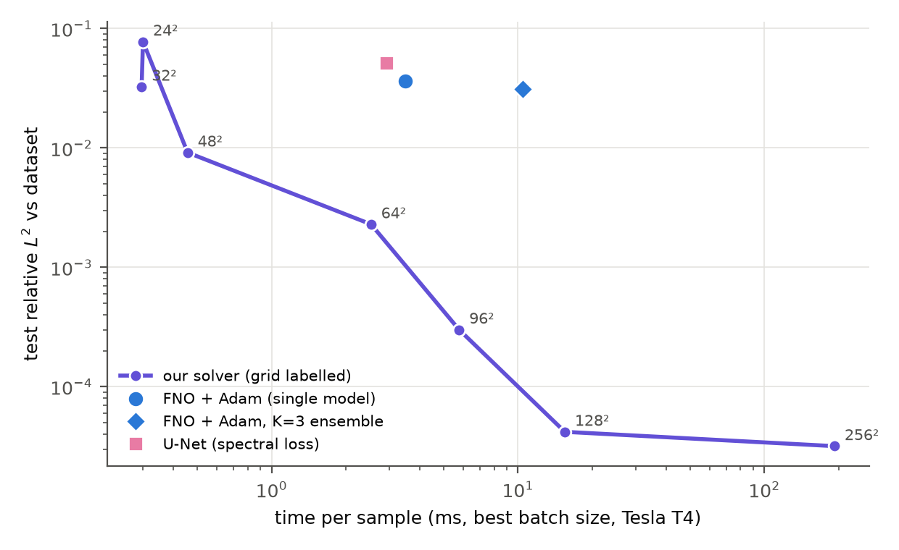

FML course project · briefing for the presentation
Rank-Adaptive Optimization for Memory-Efficient Neural Surrogates of Navier-Stokes Flow
What we set out to do, what we ran, what we found, and how to present it
Prepared 24 Nov 2026 from the project repository. Every number here comes from the saved result files (results/); figure files are named in each caption so they can be put straight on slides.
The project in one minute
Simulating fluid flow means solving the Navier-Stokes equations numerically, which is accurate but slow. A neural surrogate is a network trained to imitate the solver: it takes the same input and predicts the result in one forward pass. To trust a surrogate we also want to know when it is unsure; the standard way is to train several networks (an ensemble) and look at how much they disagree. That multiplies training memory, and a large part of training memory is the optimizer's state (Adam stores two extra numbers per weight).
Our idea: compress the optimizer's state with a low-rank projection (the GaLore method), and go one step further by letting the rank be chosen automatically per layer and over time (adaptive rank). Cheaper training → affordable ensembles → uncertainty estimates → use the uncertainty to decide which simulations to run next (active learning). Finally, compare the surrogate's speed against a real solver.
Five results to remember
Works: low-rank Adam cuts the optimizer's memory 4–14× for a 6–28% increase in test error.
Did not work: letting the rank adapt did not beat simply picking a good fixed rank, once its peak memory is counted.
Small in practice: total GPU memory dropped only ~2%, because the optimizer state is tiny next to the network's activations for this model.
Works: 3-model ensembles are 14–16% more accurate, and their disagreement points to harder samples, but it underestimates the real error (about 0.75×).
Did not work: choosing new training data by ensemble disagreement was 4–6% worse than random choice; and at equal accuracy our FNO is ~12× slower than a coarse solver run.
Negative results are reported as they are. They are findings, not failures of the work: each one was tested with a fair control.
1. Key ideas, in plain language
Navier-Stokes equationsThe equations of fluid motion. Here: 2-D flow on a square, periodic grid (what leaves one side re-enters the other), 128 × 128 points.
Vorticity ωHow much the fluid is spinning at each point. Our target field.
Forcing fA fixed pattern of pushes applied to the fluid. Our input field.
Neural surrogateA network trained on solver input/output pairs so it can predict the output without running the solver.
FNO (Fourier Neural Operator)A network that works in frequency space: it mixes the lowest 16×16 Fourier modes of the field with learned weights. Our main model (2.4 M weights).
U-NetA convolutional network that shrinks the image step by step and grows it back. Our second model (2.1 M weights).
Adam optimizer stateAdam keeps a running mean and a running variance for every weight, so its memory is 2× the model's. For the FNO: 38 MB of state for 19 MB of weights.
GaLore / low-rank AdamEach weight's gradient is a matrix G. Project it onto its r most important directions (P), and keep Adam's state only for that small projected matrix. Rank r controls memory.
Adaptive rank (our variant)Instead of one fixed r, every 200 steps each layer picks the smallest r that keeps a share τ (e.g. 99.9%) of its gradient energy.
Ensemble & spreadTrain K = 3 copies with different random seeds; average their predictions. Their disagreement (spread) is the uncertainty estimate.
Active learningStart with few labelled samples; repeatedly add the ones the model is most unsure about, instead of random ones.
Relative L² errorOur accuracy measure: size of the error divided by size of the true field. 0.036 means about 3.6% error. Lower is better.
The objective, as stated at the start
We measure
The question
Memory
How much optimizer memory does low-rank / adaptive-rank training save?
Accuracy
Does the surrogate stay accurate when trained that way?
Speed
Does training get slower?
Uncertainty
Do ensembles give useful uncertainty, and can it choose new training data?
Surrogate vs solver
Is the network actually faster than solving the equations?
2. The data
A public benchmark dataset (Zenodo record 12825163, from the paper arXiv 2310.00120): 10,000 training and 2,000 test pairs, each a 128 × 128 grid.
Input x = a random forcing pattern f.
Output y = the vorticity ω at time T = 5, starting from still fluid, viscosity ν = 1/500.
We split the 10,000 into 8,000 train / 2,000 validation (fixed seed), and standardise both fields using training statistics.
We proved this reading of the data ourselves: our own solver, started from rest with x as the forcing, reproduces y to 0.003% error (Stage 4).

Six training samples. Top: forcing x (input). Bottom: vorticity at T = 5 (output the network must predict). File: figures/data_samples.png
3. How the work was organised
The work ran in stages, each answering one question. GPU stages ran on Kaggle (Tesla T4); the rest ran locally. Each stage has its own notebook in notebooks/, and all results are also collected in the main notebook navier-stokes.ipynb (Part 2).
Stage
Question
Short answer
0 Gradient study
Are the gradients actually low rank?
Yes, strongly
1 Baselines
How good are plain FNO and U-Net?
FNO best: 3.6% error
2 Optimizers
Low-rank and adaptive-rank vs Adam?
Memory 4–14× smaller, error +6–28%; adaptive no better than fixed
3 Ensembles
Do 3-model ensembles help, and is their spread useful?
14–16% more accurate; spread informative but too small
4 Solver check
Can we reproduce the dataset with our own solver?
Yes, to 0.003%
5 Speed
Is the surrogate faster than the solver?
Not at equal accuracy
7 Active learning
Does picking data by uncertainty beat random?
No, 4–6% worse
6 Rollout
Step-by-step prediction over time
Not done (out of time)
All comparisons are fair by construction: same data split, same epochs, same batch size (32), same learning rate (10⁻³), several random seeds where it matters, and errors always measured on the untouched test set.
4. Results, stage by stage
Stage 0: Are the gradients low rank? (the motivation)
We trained each model for 3,000 steps and measured, every 100 steps, how many singular directions of each layer's gradient are needed to hold 95% of its energy.
In a typical layer, 2–7% of the directions hold 95% of the energy. Even the hardest layer needs at most ~11%.
Layers differ a lot: the most demanding FNO layer needs ~3.5× the share of the easiest; in the U-Net ~18×. That is the argument for per-layer rank.
Over time the needed rank of the FNO stayed roughly flat, so the case for changing rank over time was weaker from the start.

Each dot is one weight tensor: share of its full rank needed for 95% of the gradient energy (black bar = median). Dots at 1.0 are tiny tensors (biases etc.) that cannot be compressed and were excluded from the numbers above. File: figures/gradient_rank_per_layer.png
Gradients are highly compressible: 95% of the information sits in a few percent of the directions, and different layers need different amounts. This is why low-rank optimizers can work.
Stage 1: Baselines
Model
Training
Test error (rel. L²)
FNO, Adam
3 seeds, 20 epochs
0.0364 ± 0.0019
U-Net, Adam, plain MSE loss
best of 3 learning rates
0.0555
U-Net, Adam, spectral loss
same learning rate
0.0516
The FNO is the strongest model, so it is used for all later experiments.
The spectral loss adds a penalty on errors at fine scales (high frequencies). For the U-Net it halved the mid-frequency error and cut spurious fine-scale noise from 34.5× to 3.8× the true energy there. The overall gain (7%) is from one seed only, so it is not established.
An earlier U-Net run had failed to train; re-running it properly with a learning-rate sweep fixed that. Worth one sentence on a slide as an example of checking a surprising result.

U-Net error by frequency band (error energy / true energy), plain loss vs spectral loss. File: figures/final/fig_unet_bands.png
Stage 2: Low-rank and adaptive-rank optimizers (the main experiment)
We implemented our own low-rank Adam (optim/lowrank_adam.py), which handles the FNO's complex-valued Fourier weights. At full rank it reproduces standard Adam exactly (checked by unit tests, 37 tests in total). We first screened 7 settings for 10 epochs, then ran 5 finalists for 20 epochs × 3 seeds each.
Optimizer
Test error
Optimizer memory (MB)
vs Adam
Peak GPU (MB)
Adam (reference)
0.0364 ± 0.0019
38.2
1×
4,043
GaLore, fixed r = 16
0.0386 ± 0.0008
9.9
3.9× less
3,966
Adaptive, τ = 0.999
0.0388 ± 0.0003
13.7 (peak)
2.8× less
3,968
GaLore, fixed r = 8
0.0424 ± 0.0006
5.1
7.4× less
3,959
Adaptive, τ = 0.99
0.0454 ± 0.0013
4.6 (peak)
8.4× less
3,958
GaLore, fixed r = 4
0.0467 ± 0.0009
2.8
13.8× less
3,956
The trade-off is smooth: less memory costs some accuracy, from +6% (r = 16) to +28% (r = 4).
Adaptive rank does not win. Its memory changes during training, and what matters is the peak. τ = 0.999 needs 13.7 MB at peak for the same accuracy that fixed r = 16 gets with 9.9 MB. τ = 0.99 is less accurate than fixed r = 8 at similar memory.
Peak GPU memory barely changes (~2%). Weights plus optimizer state are under 60 MB of a ~4 GB peak; the rest is the network's intermediate activations. For this model, the optimizer is simply not where the memory goes.
Training speed is the same within 3% for all optimizers.

Accuracy vs optimizer memory (log scale), mean ± std over 3 seeds. For adaptive rank, the marker is its end-of-training memory and the bar extends to its peak. Lower-left is better. File: figures/final/fig_accuracy_vs_state.png

What the adaptive optimizer chose: average rank over training. τ = 0.999 rises to ~19 in epoch 2, then settles near 10. Dotted lines are the fixed ranks. File: figures/final/fig_adaptive_rank.png
Low-rank Adam shrinks optimizer memory up to 14× for a moderate accuracy cost. Adapting the rank automatically sounds smarter, but at the same peak memory it is no better than a well-chosen fixed rank. And for this model the optimizer is only ~1% of GPU memory, so the total saving is small.
Also available: figures/final/fig_val_curves.png (validation error per epoch for all optimizers).
Stage 3: Ensembles and uncertainty
For each optimizer, the three seeds were combined into an ensemble: average the three predictions, and use their disagreement (spread) as uncertainty.
Optimizer
Single model
3-model ensemble
Gain
Spread / error
Rank correlation
Adam
0.0364
0.0310
15%
0.75
0.55
GaLore r = 16
0.0386
0.0333
14%
0.70
0.55
Adaptive τ = 0.999
0.0388
0.0331
15%
0.74
0.58
GaLore r = 4
0.0467
0.0394
16%
0.78
0.66
Every ensemble is 14–16% more accurate than its average member.
Spread ranks the samples sensibly: where the models disagree more, the error is usually larger (Spearman rank correlation 0.55–0.66).
But the spread is too small: on average only 0.70–0.78 of the actual error. The ensemble is over-confident.
Low-rank training makes ensembles cheaper: three r = 16 models need 30 MB of optimizer state vs 114 MB for three Adam models.

Each dot is one test sample: ensemble spread (x) vs actual error (y). Points above the dashed line are where the error exceeds the spread, which is most of them. File: figures/final/fig_spread_error.png
Stage 7: Active learning (uncertainty vs random)
Can the ensemble's disagreement pick the most useful new training samples? Setup: start from 1,000 random training samples, train a 3-model ensemble (low-rank Adam, r = 16), add 500 more samples, retrain, repeat up to 3,000. One run picks the 500 samples with the largest spread; the control run picks 500 at random. Everything else is identical. The 8,000 training samples already have answers, so "running a simulation" just means revealing a sample's answer.
Labelled samples
Random selection
Uncertainty selection
Difference
1,000 (shared start)
0.0923
0.0923
0%
1,500
0.0726
0.0771
+6.2%
2,000
0.0607
0.0645
+6.2%
2,500
0.0554
0.0577
+4.1%
3,000
0.0497
0.0517
+4.1%
Uncertainty selection was worse than random at every round, by 4–6% (ensemble test error; higher is worse).
The selection itself worked as designed: the chosen samples had 1.3–1.7× the average spread of the pool.
A side effect we measured: after training on high-spread samples, the ensemble's spread stopped tracking its test error (rank correlation fell from 0.56 to 0.19–0.26, while it stayed 0.63–0.65 with random selection). A plausible reading is that the chosen samples are unusual, so the training set no longer resembles the test set; we did not test this further.
Caveat: one run per strategy. The gap is consistent across all four rounds, but its exact size is uncertain.

Test error vs number of labelled samples. Solid: 3-model ensemble; dashed: average single model. Purple: uncertainty selection; grey: random. File: figures/final/fig_active_learning.png
How to say itNaive "pick the most uncertain" active learning did not help here: random choice was 4–6% better. This fits Stage 3: the spread is informative but miscalibrated, and greedily picking the most uncertain samples skews the training set.
Stage 4: Our own solver reproduces the dataset
We wrote a fast GPU solver (solver/ns2d.py, pseudo-spectral method). Started from still fluid with x as the forcing, it reproduces the dataset's y on 50 test samples with mean error 0.0027% (worst 0.02%). Wrong guesses fail clearly: viscosity 1/1000 gives 2% error; swapped axes give 86%. This confirmed what x and y are, and gave us a solver for the speed comparison.

Two test samples: forcing x, dataset y, our solver's result, and the difference (note the tiny colour scale of the difference). File: figures/stage4_examples.png
Stage 5: Is the surrogate faster than the solver?
We timed our solver at several grid sizes (coarser grid = faster but less accurate) and the trained networks on the same GPU, with a careful timing protocol (warm-up, synchronisation, repeats, best of batch sizes 1/32/256).
Method
Time per sample
Error vs dataset
Solver, 32 × 32 grid
0.30 ms
0.033
Solver, 48 × 48 grid
0.46 ms
0.009
U-Net
2.9 ms
0.052–0.056
FNO
3.5 ms
0.036
Solver, 128 × 128 grid (full accuracy)
15.5 ms
0.00004
At equal accuracy the FNO is slower: a coarse 32 × 32 solve is already more accurate (0.033 vs 0.036) and about 12× faster.
The FNO is only faster (4.4×) than the full-accuracy 128 × 128 solve, and it would need ~145,000 predictions before that saving repays the cost of generating its training data and training it.

Speed vs accuracy (both log scale). The purple line is our solver at different grid sizes; lower-left is better. The networks sit above and to the right of the solver line. File: figures/final/fig_speed_accuracy.png
Surrogates are often presented as "much faster than the solver". Compared fairly, at the same accuracy, our FNO is about 12× slower than a coarse solver run. It only wins against a needlessly fine solver, and needs ~145k uses to pay back its training.
5. Limitations (say these honestly on a slide)
One model, one dataset, one GPU type. Results are for the FNO on this 2-D benchmark on a Tesla T4.
20 epochs. The low-rank runs were still improving; longer training might narrow the accuracy gap.
Seeds: 3 seeds per optimizer; only 1 seed per U-Net loss and 1 run per active-learning strategy.
Optimizer memory is small for this model, so total GPU savings are ~2%. The method would matter more for models where the optimizer state dominates (large weights, small activations).
Active learning was tested only in its simplest form (pick the top-500 most uncertain). Variants that mix in random samples or encourage diversity were not tried.
Not done: multi-step rollout (predicting the flow step by step over time). It needs a new time-series dataset from our own solver.
6. Suggested slide outline (about 15 slides)
#
Slide
Use
1
Title, team
2
Motivation: solvers are slow; surrogates; we want uncertainty → ensembles → memory problem
Section "one minute"
3
Objective and the five questions
Objective table
4
Data: forcing → vorticity at T = 5
data_samples.png
5
Models: FNO and U-Net (one line each)
Key ideas
6
Low-rank Adam / GaLore and our adaptive rank (diagram: G → Pᵀ G → small state)
Key ideas
7
Gradients are low rank (motivation)
gradient_rank_per_layer.png
8
Baselines
Stage 1 table
9
Main result: accuracy vs optimizer memory
fig_accuracy_vs_state.png + table
10
What the adaptive rank did; why it doesn't win
fig_adaptive_rank.png
11
Ensembles: accuracy gain and uncertainty
fig_spread_error.png
12
Active learning: uncertainty vs random
fig_active_learning.png
13
Our solver reproduces the dataset
stage4_examples.png
14
Surrogate vs solver speed
fig_speed_accuracy.png
15
Conclusions, limitations, future work
Five results + Section 5
7. Where everything is
What
Path in the repository
Main notebook (everything in one place)
navier-stokes.ipynb
One notebook per stage
notebooks/stage*.ipynb
All numbers in one table (102 rows, with units and sources)
results/FINAL.csv
Slide-ready figures (PNG and PDF)
figures/final/, plus figures/data_samples.png, figures/gradient_rank_per_layer.png, figures/stage4_examples.png